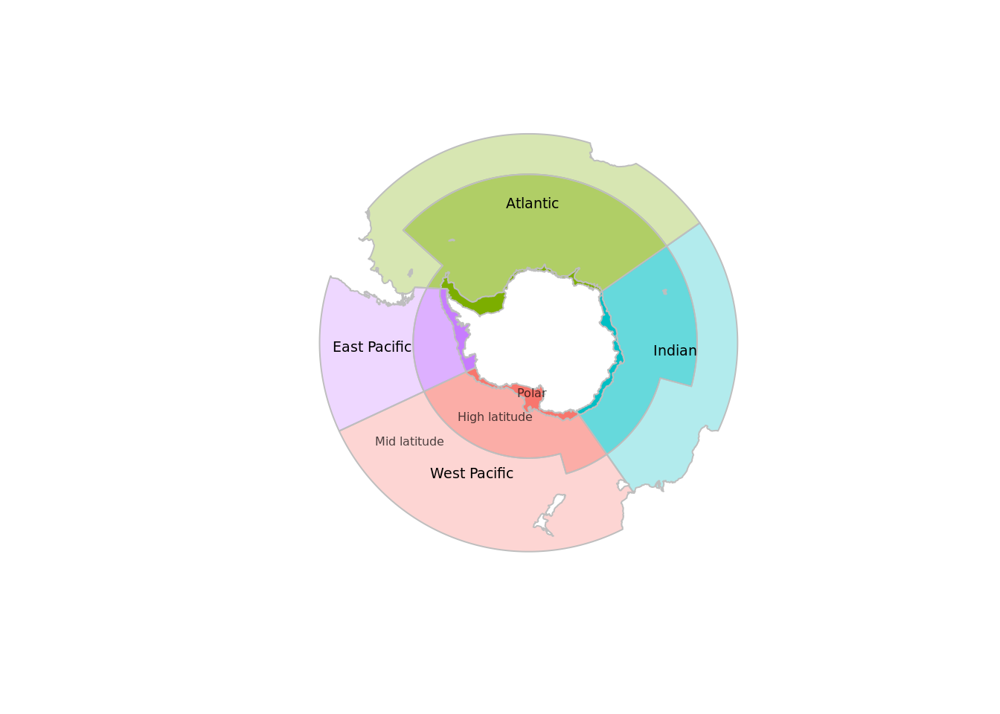
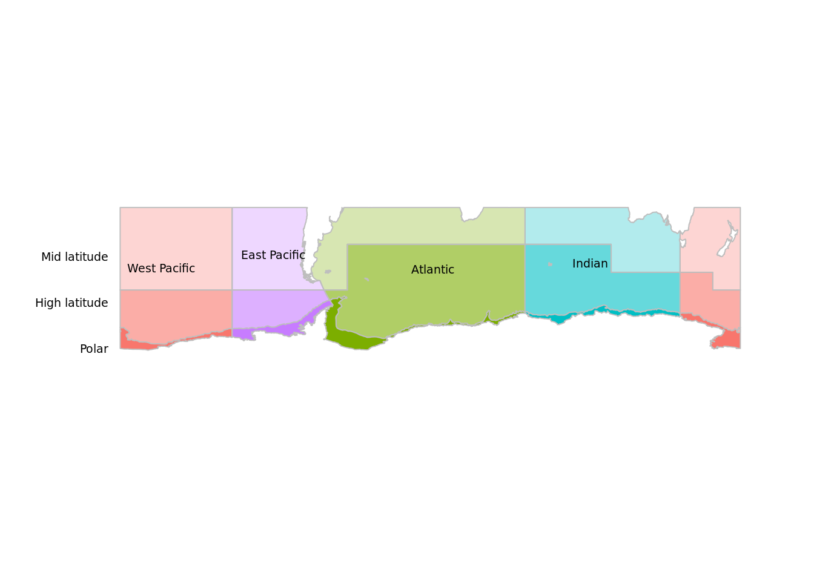
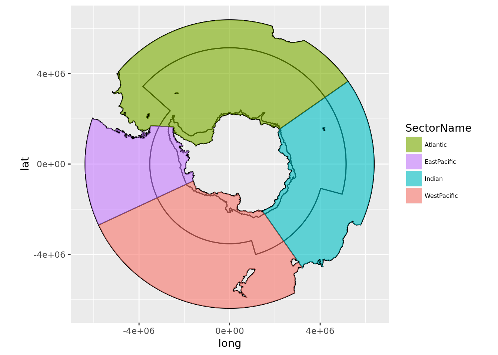

Processing Workflow
This is in-progress, current map of the entire process is here: https://github.com/AustralianAntarcticDivision/aceecostats/issues/14
Regions
Get the regions.
library(aceecostats)
library(sp)
labs <- data.frame(x= c(112406,4488211,-1734264,-4785284), y=c(4271428,-224812,-3958297,-104377), labels=c("Atlantic","Indian", "West Pacific", "East Pacific"))
labs <- SpatialPointsDataFrame(labs[,1:2],labs, proj4string = CRS(proj4string(aes_zone)))
plot(aes_zone, col = aes_zone$colour, border="grey")
text(labs$x, labs$y, labs$labels, cex=0.6)
# latitude zone labels
lat.labs<- function(the.proj="polar"){
if(the.proj=="latlon"){
ext <- extent(aes_zone_ll)
text("Polar", x=ext@xmin, y=ext@ymin, xpd=NA, pos=2, cex=0.6)
text("High latitude", x=ext@xmin, y=ext@ymin*0.8, xpd=NA, pos=2, cex=0.6)
text("Mid latitude", x=ext@xmin, y=ext@ymin*0.6, xpd=NA, pos=2, cex=0.6)
}
if(the.proj=="polar"){
text(c("Polar", "High latitude", "Mid latitude"), x=c(113064.6,-1017581.1,-3642294), y=c(-1518296,-2285519,-3012363), cex=0.5, col=rgb(0,0,0,0.7))
}
}
lat.labs()
In unprojected form.
library(aceecostats)
library(raster)
library(sp)
plot(aes_zone_ll, col = aes_zone_ll$colour, border="grey")
ll_labs <- spTransform(labs, CRS(proj4string(aes_zone_ll)))
text(ll_labs$x, ll_labs$y, labels=labs$labels, cex=0.6)
lat.labs("latlon")
Metadata
The data is stored on the map object itself.
knitr::kable(as.data.frame(aes_zone))| SectorName | Zone | area_km2 | colour | ID |
|---|---|---|---|---|
| Atlantic | High-Latitude | 19855197.0 | #7CAE0099 | 1 |
| Atlantic | Continent | 1084548.0 | #7CAE00FF | 2 |
| Atlantic | Mid-Latitude | 15671351.4 | #7CAE004D | 3 |
| EastPacific | High-Latitude | 3241353.4 | #C77CFF99 | 4 |
| EastPacific | Continent | 724857.5 | #C77CFFFF | 5 |
| EastPacific | Mid-Latitude | 10573933.0 | #C77CFF4D | 6 |
| Indian | High-Latitude | 11699156.9 | #00BFC499 | 7 |
| Indian | Continent | 706453.8 | #00BFC4FF | 8 |
| Indian | Mid-Latitude | 13068371.7 | #00BFC44D | 9 |
| WestPacific | High-Latitude | 8136176.3 | #F8766D99 | 10 |
| WestPacific | Continent | 885409.0 | #F8766DFF | 11 |
| WestPacific | Mid-Latitude | 23025500.3 | #F8766D4D | 12 |
Prefer ggplot2?
## TODO fix this code
library(ggplot2)
library(ggpolypath)
tab <- fortify(aes_zone)## Regions defined for each Polygonszcols <- as.data.frame(aes_zone)[, c("colour", "SectorName", "Zone")]
tab$SectorName <- zcols$SectorName[factor(tab$id)]
ggplot(tab) + aes(x = long, y = lat, group = group, fill = SectorName) + scale_fill_manual(values = setNames(zcols$colour, zcols$SectorName)) + geom_path() +
geom_polypath() + theme(legend.text=element_text(size=6)) + guides(position = "bottom") + coord_equal()